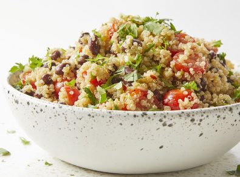

Easy Quinoa Salad
This Quinoa salad is easy to make for a gerat summer meal.Light and citrsuy, it's a shile new way to enjoy quinoa.Lime juiice and cilantro give a refresh kikck , while quinoa and black beans make it hearty and filling.

- Prep Time : 20 mins
- Cook Time : 15 mins
- Total Time : 35 mins
- Servings : 6
this quinoa salad recipe is as delicious as it is nutritious
How To Make Quinoa Salad
You'll find a detailed ingrediaet list and instruction in the recipie below, but let's go over the basics :
Quinoa Salad Ingredients
These are the ingredients you'll need to make this healthy quinoa salad recipe :
- Quinoa and water : Cook one cup of Quinoa in two cups of water.
- Oil : The deressing starts with the extra-virgin olive oil.
- Limes : Lime juice lends a welcome brightness
- Seasonings : Seasoning the quinoa salad with ground cumin, red pepperflakes, frsh cilantro, and black pepper.
- Cherry tomatoesandgreen onions : halved cherry tomatoes and chopped green onions give the quinoa salas pops of color.
- black beans : you'll need drained can of black beas for tthis protein-packed quinoa salad.
How Do You Make Quinoa Salad ?
her's a bried overview of what you can expect when you make this homemade quinoa salad :
- Cook the Quinoa.
- Make the dressing.
- Combine the quinoa with the tomatoes,black beans, and green onions.
- Toss the sald with the dressing, then stri in the remaing ingredients.
Ingredients
- 2 cups water
- 1 cup quinoa
- ¼ cup extra-virgin olive oil
- 2 limes, juiced
- 2 teaspoons ground cumin
- 1 teaspoon salt
- ½ teaspoon red pepper flakes, or more to taste
- 1 ½ cups halved cherry tomatoes
- 1 (15 ounce) can black beans, drained and rinsed
- 5 green onions, finely chopped
- ¼ cup chopped fresh cilantro
- salt and ground black pepper to taste
Nutrition Facts
- 270 Calories
- 12g Fat
- 34g Carbs
- 9g Protein
Go back to Home Page